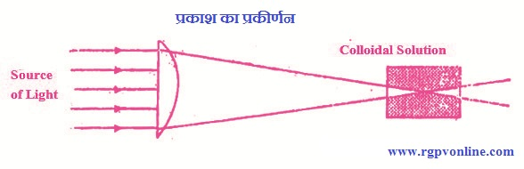
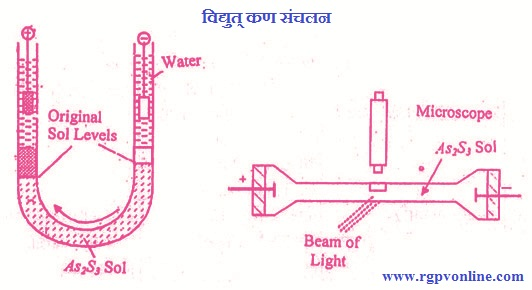
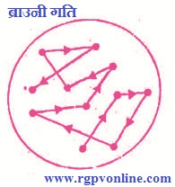

Q.10 : कोलॉइडी विलयन के गुणों पर निबन्ध लिखिए।
उत्तर - कोलॉइड के गुण - कोलॉइड के प्रमुख गुण निम्नलिखित हैं -
(i) कोलॉइड के प्रकाशीय गुण (Optical Properties of Colloids)/टिण्डल प्रभाव- जब किसी कोलॉइडी विलयन पर प्रकाश पुंज डाला जाता है तो कोलॉइडी कण प्रकाश का प्रकीर्णन करते हैं जिससे मार्ग में कोलॉइडी कण चमकने लगते हैं। इस प्रभाव को सर्वप्रथम फैराडे (1857) ने प्रदर्शित किया था। टिण्डल ने इसका सविस्तार अध्ययन किया। इस कारण इसे टिण्डल प्रभाव या फैराडे टिण्डल प्रभाव (Faraday Tyndall effect) कहते हैं।

चित्र 10.1 प्रकाश का प्रकीर्णन
उपरोक्त घटना कोलॉइडी कणों द्वारा उन पर पड़ने वाले प्रकाश के प्रकीर्णन पर आधारित होती है। जब प्रकाश पुंज कोलॉइडी कणों पर पड़ता है तो वे उनका अनियमित ढंग से प्रकीर्णन कर देते हैं। प्रकीर्णन प्रकाश की दिशा में लम्बवत् अधिकतम होता है। यही कारण है, कि प्रकाश मार्ग के लम्बवत् दिशा में देखने पर चमकीले रंग का टिण्डल कोण दिखायी देता है। यदि कोलॉइडी विलयन के स्थान पर वास्तविक विलयन में प्रकाश का पुंज भेजा जाये तो प्रकाश का प्रकीर्णन नहीं होता है।
अँधेरे कमरे में किसी छिद्र से आने वाले प्रकाश का मार्ग टिंण्डल प्रभाव के कारण ही चमकता दिखाई देता है। प्रकाश के मार्ग में आने वाले धूल के कण उसे प्रकीर्णित करके चमकते हुए दिखाई देते हैं। अति-सूक्ष्मदर्शी का सिद्धांत टिण्डल प्रभाव या प्रकाश के प्रकीर्णन पर आधारित है।
(ii) कोलॉइड के विद्युतीय गुण (Electrical Properties of Colloids)/ विद्युत कण संचलन- कोलॉइडी विलयन के कणों पर धन या ऋण आवेश उपस्थित रहते हैं। अतः इस विलयन से विद्युत् धारा प्रवाहित करने पर ये कण विपरीत आवेश वाले इलैक्ट्रोडों की ओर गमन करने लगते हैं। इलैक्ट्रोड पर पहुँचकर ये आवेशहीन हो जाते हैं तथा अवक्षेप के रूप में पृथक हो। जाते हैं।

चित्र 10.2 विद्युत् कण संचलन
As2S3 जैसे ऋण आवेश से युक्त कोलॉइडी विलयन को एक U-नली में लेकर विद्युत् धारा प्रवाहित करने पर कोलॉइड कण ऐनोड की ओर आकर्षित होते हैं। इसके विपरीत, धन आवेश से युक्त कोलॉइडी विलयन (Fe(OH)3 का विलयन) को U- नली में लेने पर कोलॉइडी कण कैथोड की ओर आकर्षित होते हैं। विद्युत् क्षेत्र में कोलॉइड कणों के ऐसे गमन को विद्युत् कण संचलनः(electrophoresis) कहते हैं।
(iii) ब्राउनी गति (Brownian Movement)- सन् 1827 में अंग्रेज वनस्पति शास्त्री रॉबर्ट ब्राउन ने अति सूक्ष्मदर्शी द्वारा कोलॉइडी विलयनों का अध्ययन किया तथा षाया कि निलम्बित कण टेढ़े-मेढ़े ढंग से सतत् गतिमय रहते हैं, इसे ब्राउनी गति कहते हैं। कोलॉइडी विलयनों में यह परिघटना अत्यंत प्रभावी होती है, परन्तु कोलॉइडी कणों का आकार बढ़ने के साथ-साथ इनकी तीव्रता कम होती जाती है। ब्राउन ने इस गति का सूक्ष्मदर्शी द्वारा जल में निलम्बित परागकणों (pollen grains) का परीक्षण करते हुए अवलोकन किया। एक व्यक्तिगत (individual) कण का अध्ययन करने पर पता चलता है कि यह कण सतत् तेज गति में रहता है तथा छोटी-छोटी सी सीधी रेखाओं में दिशा बदलकर गति करता है। वास्तविक विलयनों तथा निलम्बनों में ऐसा नहीं होता।
ब्राउनी गति उत्पन्न होने का कारण यह है कि कोलॉइडी कण पर परिक्षेपण माध्यम के अणुओं द्वारा असमान टक्करें होती हैं। अतः ये कोलॉइड कण परिक्षेपणं माध्यम के अणुओं की ऊर्जा के तुल्य ऊर्जा प्राप्त कर लेते हैं। चूंकि कोलॉइडी कण परिक्षेपण माध्यम के अणुओं की अपेक्षा बहुत भारी होते हैं। अतः उनकी गति माध्यम के अणुओं से कम रहती है।

चित्र 10.3 ब्राउनी गति
(iv) विषमांगी प्रकृति (Heterogeneous Nature) - कोलॉइडी विलयन परिक्षिप्त प्रावस्था तथा परिक्षेपण माध्यम से मिलकर बने होते हैं। ये, विषमांगी स्वभाव के होते हैं। इनका विषमांगी स्वभाव इन्हें इलेक्ट्रॉनिक सूक्ष्मदर्शी में देखने से पता चलता है। उदाहरण के लिए, यदि As2S3) का जल में कोलॉइडी विलयन हो तो, आर्सेनियस सल्फाइड (As2S3) के कण परिक्षिप्त प्रावस्था बनाते हैं तथा जल, परिक्षेपण माध्यम बनाता है।
(v) स्थायी प्रकृति (Stable Nature)- कोलॉइडी विलयनों की प्रकृति रथायी रहती है। इनके कण गतिमान अवस्था में रहते हैं तथा पात्र की सतह पर एकत्रित नहीं होते हैं।
(vi) फिल्टरनीयता (Filterability)- कोलॉइडी कण साधारण फिल्टर पेपर से सरलता से गुजर जाते हैं क्योंकि इनका आकार फिल्टर पेपर के छिद्र से छोटा होता है। परन्तु यह जन्तु या वनस्पति की झिल्लियों एवं अल्ट्रा फिल्टर पेपर से नहीं गुजर पाते हैं।
(vii) अणुसंख्यक गुणधर्म (Colligative Properties)- कोलॉइडी कणों का अणु भार बहुत अधिक होता है। अतः प्रति लिटर कोलॉइडी कणों की संख्या वास्तविक विलयन से कम होती है एवं ये विलयन शुद्ध परिक्षेपण माध्यम के लगभग समान तापक्रम पर उबलते तथा जमते हैं। इनके वाष्प-दाब में अवनमन भी नगण्य होता है।
(viii) अधिशोषण (Adsorption)- कोलॉइडी कणों में अन्य पदार्थों को आकर्षित करके अपने पृष्ठ पर अधिशोषित करने का गुण पाया जाता है। अधिशोषण एक पृष्ठीय घटना है। कोलॉइडी कण का उप विभाजन अधिक होने से पृष्ठीय क्षेत्रफल में वृद्धि होती है एवं अधिशोषण की मात्रा बढ़ती है।
(ix) स्कन्दन (Coagulation)- विद्युत्-अपघट्य द्वारा कोलॉइडी विलयन का अवक्षेपण स्कन्दन कहलाता है। यदि कोलॉइडी विलयन में विद्युत्-अपघट्य की उचित मात्रा मिला दें तो कोलॉइडी कणों का आवेश नष्ट हो जाता है एवं कई कण आपस में मिलकर अवक्षेप बनाते हैं।
(x) परासरण दाब (Osmotic Pressure)- कोलॉइडी विलयनों का परासरण दाब" वास्तविक विलयनों की तुलना में बहुत कम होता है। यदि वास्तविक विलयन को कोलॉइडी विलंयन में परिवर्तित किया जाता है तो कणों की संख्या में कमी आती है एवं परासरण दाब कम हो जाता है।